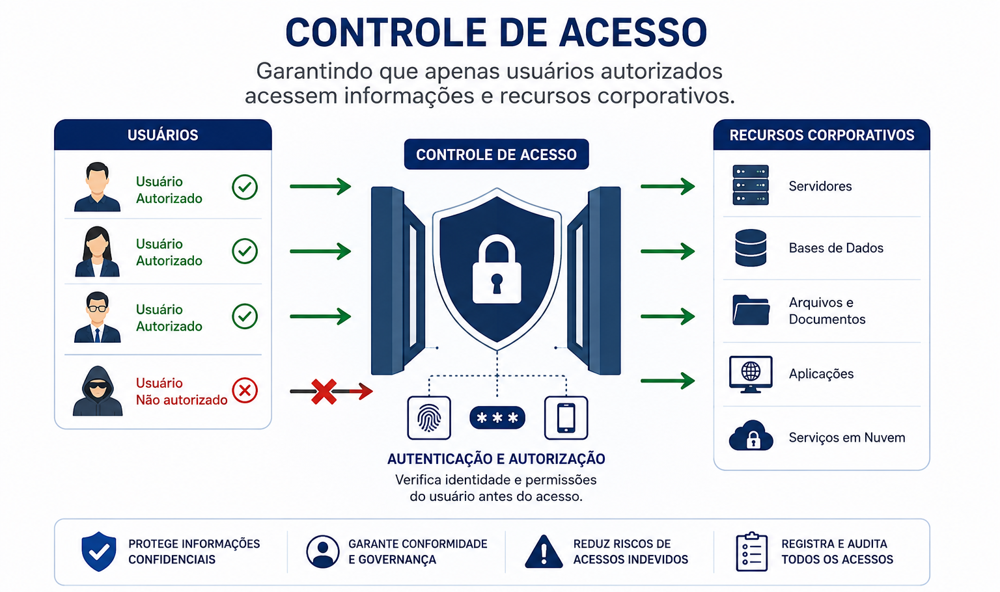
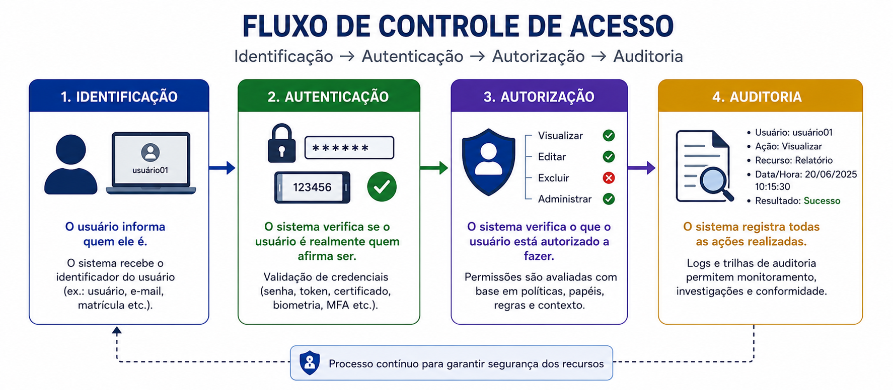
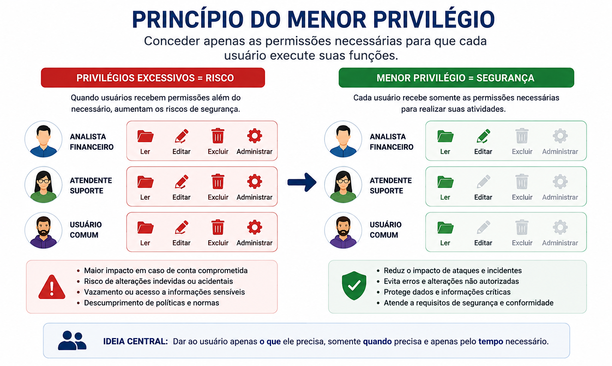
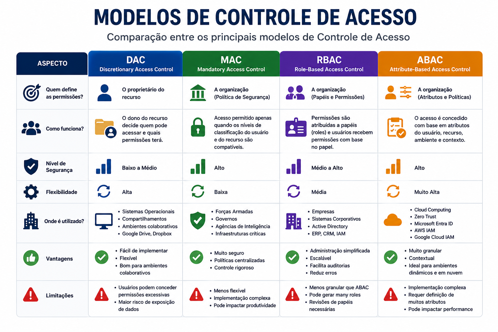
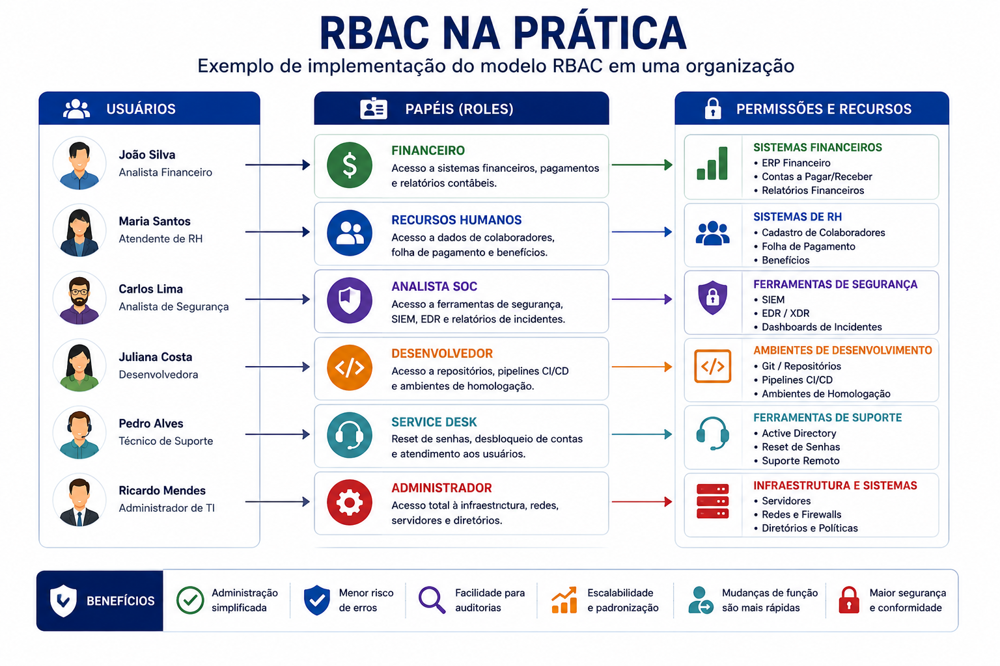
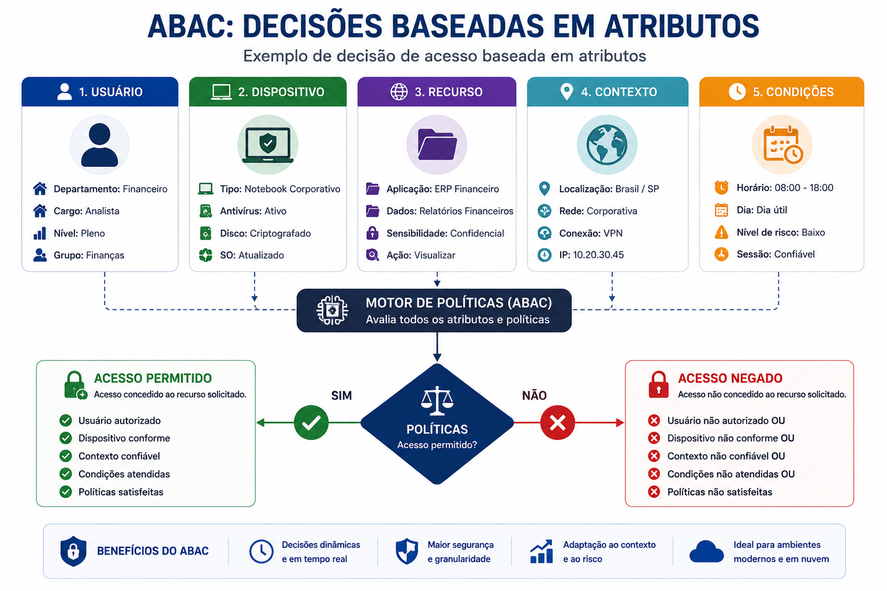
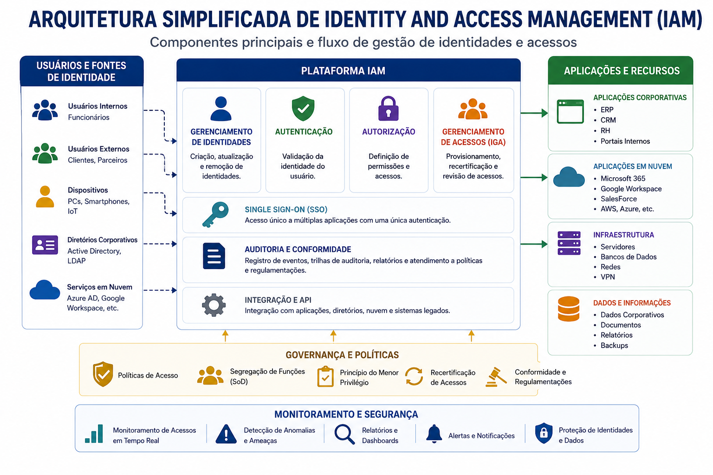
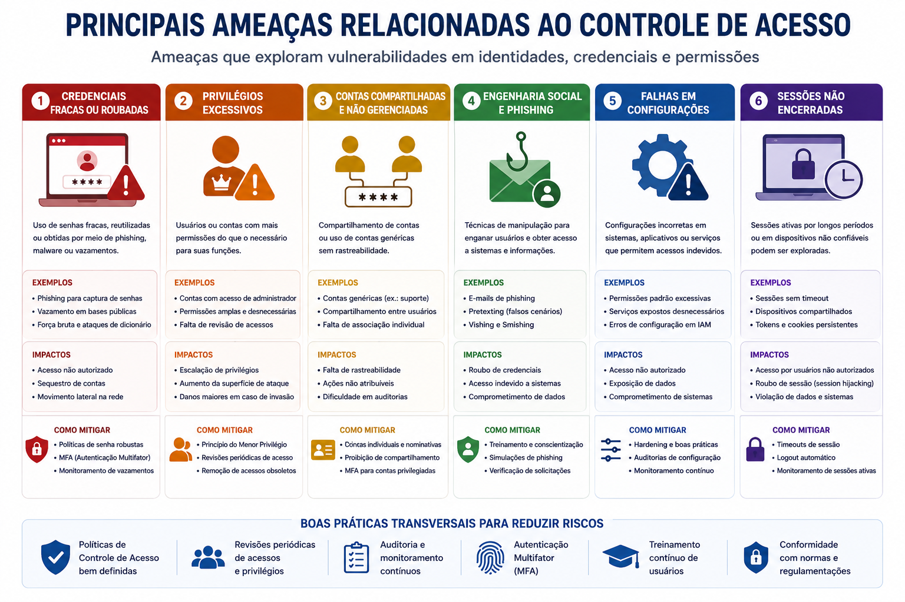
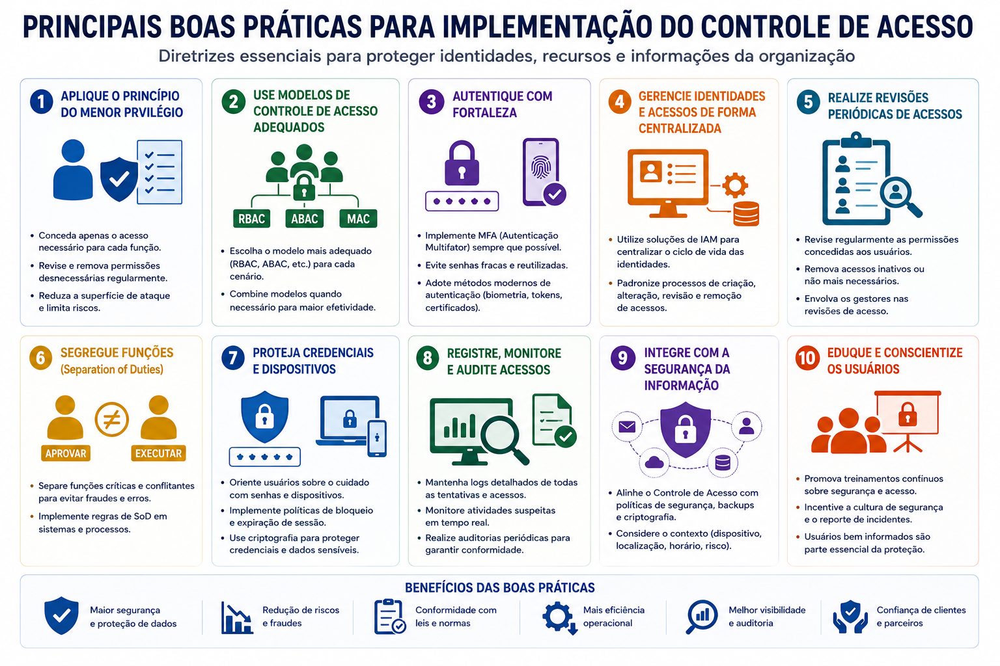

📋 Guia Rápido
Autenticação
Autorização
RBAC
ABAC
DAC
MAC
IAM
Least Privilege
Need to Know
📖 Resumo Executivo
Imagine um prédio corporativo onde qualquer pessoa pudesse entrar livremente em qualquer sala, acessar documentos confidenciais, utilizar computadores dos funcionários ou entrar no Data Center. Mesmo que todas as informações estivessem criptografadas, a ausência de controles físicos e lógicos representaria um enorme risco para a organização.
Nos ambientes digitais ocorre exatamente o mesmo. Empresas precisam garantir que cada usuário tenha acesso apenas aos recursos necessários para desempenhar suas atividades, evitando acessos indevidos, vazamentos de informações e alterações não autorizadas.
É nesse contexto que surge o Controle de Acesso, um dos pilares da Segurança da Informação. Ele define quem pode acessar determinado recurso, em quais condições esse acesso será permitido e quais ações cada usuário poderá executar.
Controle de Acesso significa disponibilizar o recurso certo, para a pessoa certa, no momento certo e com o menor privilégio possível.
Atualmente, mecanismos de Controle de Acesso estão presentes em praticamente todos os sistemas corporativos, desde aplicações Web e serviços em nuvem até bancos de dados, redes, dispositivos móveis e infraestruturas críticas.
Apresentar os principais conceitos relacionados ao Controle de Acesso, compreender os modelos utilizados pelas organizações e entender como mecanismos como RBAC, ABAC, IAM e o Princípio do Menor Privilégio contribuem para proteger informações e reduzir riscos de segurança.
👥 O que é Controle de Acesso?
Controle de Acesso é o conjunto de políticas, processos e tecnologias utilizados para garantir que apenas usuários devidamente autorizados tenham acesso aos recursos de uma organização.
Esses recursos podem incluir arquivos, bancos de dados, aplicações, servidores, equipamentos de rede, serviços em nuvem e qualquer outro ativo que contenha informações relevantes para o negócio.
Mais do que simplesmente permitir ou negar acessos, o Controle de Acesso determina exatamente quais operações cada usuário poderá realizar, como visualizar informações, alterar registros, excluir arquivos ou administrar sistemas.

Controle de Acesso não significa apenas impedir acessos indevidos. Seu principal objetivo é garantir que cada usuário possua exatamente as permissões necessárias para executar suas atividades, sem excessos que possam aumentar a superfície de ataque da organização.
🔺 Controle de Acesso e a Tríade CIA
Embora seja frequentemente associado à Confidencialidade, o Controle de Acesso contribui diretamente para os três princípios da Tríade CIA.
Por esse motivo, o Controle de Acesso é considerado um dos mecanismos mais importantes para implementação prática da Segurança da Informação, estando presente em praticamente todas as arquiteturas modernas de cibersegurança.
🆔 Os Quatro Pilares do Controle de Acesso
Sempre que um usuário tenta acessar um sistema corporativo, diversos processos de segurança são executados antes que o acesso seja concedido. Esses processos garantem que a organização saiba quem está solicitando o acesso, valide sua identidade, determine quais recursos poderão ser utilizados e registre todas as ações realizadas.
Esse fluxo é composto por quatro pilares fundamentais: Identificação, Autenticação, Autorização e Auditoria. Juntos, eles formam a base dos mecanismos modernos de Controle de Acesso utilizados em ambientes corporativos.

👤 Identificação
A Identificação representa o primeiro passo do processo de acesso. Nesse momento, o usuário informa quem afirma ser ao sistema.
Essa identificação normalmente ocorre por meio de um nome de usuário (username), endereço de e-mail, matrícula corporativa, CPF, certificado digital ou qualquer outro identificador único.
É importante destacar que, nesta etapa, o sistema ainda não sabe se o usuário realmente é quem afirma ser. Apenas recebeu uma identidade declarada.
• E-mail corporativo
• Matrícula
• CPF
• Certificado Digital
🔐 Autenticação
Após identificar o usuário, o sistema precisa verificar se ele realmente é quem afirma ser. Esse processo recebe o nome de Autenticação.
A autenticação pode utilizar diferentes fatores para validar a identidade do usuário.
Quanto maior a combinação desses fatores, maior tende a ser o nível de segurança do processo de autenticação.
A Autenticação Multifator (MFA) combina dois ou mais fatores de autenticação para reduzir significativamente o risco de comprometimento de contas.
✅ Autorização
Ser autenticado não significa possuir acesso irrestrito aos recursos da organização.
Após confirmar a identidade do usuário, o sistema verifica quais permissões estão associadas àquela identidade.
A Autorização define exatamente quais ações poderão ser executadas, quais informações poderão ser consultadas e quais recursos estarão disponíveis.
📜 Auditoria (Accounting)
O último componente do Controle de Acesso consiste em registrar todas as atividades realizadas pelos usuários.
Esses registros permitem identificar quem acessou determinado recurso, quando o acesso ocorreu, qual operação foi executada e qual foi seu resultado.
Essas informações são fundamentais para auditorias, investigações forenses, atendimento a requisitos legais e resposta a incidentes de segurança.
Na literatura de Segurança da Informação é comum encontrar o modelo AAA (Authentication, Authorization and Accounting). Embora a Identificação não faça parte oficialmente desse modelo, na prática ela representa a etapa inicial de qualquer processo de Controle de Acesso.
🔑 Princípio do Menor Privilégio (Least Privilege)
Um dos princípios mais importantes da Segurança da Informação é o Princípio do Menor Privilégio (Least Privilege). Ele estabelece que cada usuário, aplicação ou serviço deve possuir apenas as permissões estritamente necessárias para executar suas atividades, nada mais.
Na prática, isso significa reduzir ao máximo os privilégios concedidos aos usuários, diminuindo a superfície de ataque e limitando os impactos caso uma conta seja comprometida.
Esse conceito é amplamente utilizado em ambientes corporativos, provedores de serviços em nuvem, sistemas operacionais, bancos de dados e aplicações críticas.

- Reduz o impacto de contas comprometidas.
- Diminui riscos de vazamento de informações.
- Evita alterações acidentais em sistemas críticos.
- Facilita auditorias e conformidade.
- Minimiza a superfície de ataque.
📄 Need to Know
O princípio Need to Know complementa o Menor Privilégio ao determinar que um usuário somente deve acessar as informações realmente necessárias para desempenhar suas funções.
Mesmo que um colaborador possua acesso ao sistema, isso não significa que ele deva visualizar todas as informações armazenadas nele.
Esse conceito é amplamente utilizado em organizações militares, instituições financeiras, órgãos governamentais e empresas que tratam informações confidenciais.
⚙ Just Enough Access (JEA)
Em muitas situações, administradores necessitam de privilégios elevados apenas durante uma atividade específica. Após sua conclusão, essas permissões deixam de ser necessárias.
O conceito conhecido como Just Enough Access (JEA) consiste justamente em fornecer privilégios temporários e limitados, reduzindo significativamente os riscos associados às contas administrativas permanentes.
Essa abordagem é bastante utilizada em soluções modernas de Privileged Access Management (PAM) e ambientes baseados no modelo Zero Trust.
⚖ Segregação de Funções (Separation of Duties – SoD)
Outro conceito essencial do Controle de Acesso é a Segregação de Funções (SoD), que consiste em distribuir responsabilidades críticas entre diferentes pessoas, reduzindo riscos de fraude, abuso de privilégios e erros operacionais.
A ideia é impedir que um único usuário possua controle total sobre um processo crítico da organização.
Por exemplo, o colaborador responsável por cadastrar um novo fornecedor não deve ser o mesmo que aprova pagamentos para esse fornecedor.
✔ Aprovação financeira.
✔ Execução do pagamento.
Cada etapa realizada por pessoas diferentes.
• Maior rastreabilidade.
• Melhor governança.
• Conformidade com normas como ISO 27001, PCI DSS e SOX.
Diversos incidentes de segurança envolvendo vazamento de dados
ocorreram porque usuários possuíam privilégios muito superiores
aos necessários para suas funções. A aplicação consistente dos
princípios de:
Least Privilege,
Need to Know
Segregação de Funções
que reduz significativamente esse tipo de risco e
constitui uma das principais recomendações de frameworks como o
NIST Cybersecurity Framework, CIS Controls e ISO/IEC 27001.
🏛 Modelos de Controle de Acesso
Ao longo da evolução da Segurança da Informação foram desenvolvidos diferentes modelos para controlar o acesso aos recursos de uma organização. Cada modelo foi criado para atender necessidades específicas, variando desde ambientes domésticos até infraestruturas militares e grandes organizações corporativas.
Embora possuam características distintas, todos compartilham o mesmo objetivo: garantir que somente usuários autorizados possam acessar os recursos apropriados.

👤 DAC (Discretionary Access Control)
O Controle de Acesso Discricionário (DAC) é um dos modelos mais tradicionais. Nele, o proprietário do recurso possui autonomia para definir quem poderá acessá-lo e quais permissões serão concedidas.
Esse modelo é bastante comum em sistemas operacionais, compartilhamentos de arquivos e ambientes colaborativos.
• Flexível.
• Fácil administração.
• Compartilhamentos Windows.
• Permissões em Linux.
• Google Drive.
Grande flexibilidade para compartilhamento de informações.
Usuários podem conceder permissões excessivas, aumentando os riscos de segurança.
🛡 MAC (Mandatory Access Control)
No Controle de Acesso Obrigatório (MAC), as permissões não são definidas pelos usuários, mas pela própria organização por meio de políticas rígidas de segurança.
Cada usuário e cada informação recebem classificações de segurança. O acesso somente será permitido quando os níveis de classificação forem compatíveis.
Interno
Confidencial
Secreto
Ultrassecreto
• Governos.
• Agências de Inteligência.
• Infraestruturas críticas.
Os usuários não conseguem alterar permissões de acesso.
Todas as decisões são definidas pela política de segurança.
👥 RBAC (Role-Based Access Control)
O Controle de Acesso Baseado em Papéis (RBAC) é atualmente o modelo mais utilizado em ambientes corporativos.
Nesse modelo, as permissões são atribuídas aos papéis (roles), e não diretamente aos usuários. Cada colaborador recebe um papel de acordo com sua função na organização.
Sempre que um novo funcionário ingressa na empresa, basta associá-lo ao papel correspondente para que todas as permissões necessárias sejam automaticamente concedidas.
Financeiro
Administrador
Analista SOC
Desenvolvedor
Suporte
✔ Menor risco de erros.
✔ Facilidade para auditorias.
✔ Escalabilidade.
Todos os Analistas de Segurança recebem exatamente as mesmas
permissões definidas para o papel "Analista SOC", evitando
configurações individuais.
🎯 ABAC (Attribute-Based Access Control)
O Controle de Acesso Baseado em Atributos (ABAC) representa uma evolução dos modelos tradicionais.
Em vez de considerar apenas o papel do usuário, o ABAC avalia diversos atributos antes de autorizar um acesso.
Entre esses atributos podem estar localização geográfica, horário, dispositivo utilizado, classificação da informação, nível de risco, departamento e diversas outras características.
🕒 Horário
💻 Dispositivo
🏢 Departamento
🔒 Classificação
📱 Nível de risco
Zero Trust
Microsoft Entra ID
AWS IAM
Google Cloud IAM
Um colaborador poderá acessar o sistema financeiro apenas
durante o horário comercial, utilizando um notebook corporativo
e conectado à rede da empresa.
• DAC → O proprietário controla o acesso.
• MAC → A organização controla o acesso.
• RBAC → O acesso depende do papel exercido.
• ABAC → O acesso depende de atributos e contexto.
Na prática, grandes organizações costumam combinar diferentes modelos de Controle de Acesso para atender requisitos de segurança, conformidade e governança.
👥 RBAC na Prática
Embora o conceito de RBAC seja relativamente simples, sua aplicação em ambientes corporativos pode envolver milhares de usuários, centenas de aplicações e dezenas de departamentos. Em vez de atribuir permissões individualmente para cada colaborador, a organização cria papéis (roles) representando funções existentes no negócio.
Cada papel reúne um conjunto específico de permissões. Os usuários recebem apenas o papel correspondente às suas atividades, tornando o gerenciamento muito mais simples e reduzindo significativamente a probabilidade de erros administrativos.

Sempre que um colaborador muda de função, normalmente basta alterar seu papel dentro do sistema para que todas as permissões sejam atualizadas automaticamente.
🎯 ABAC: Decisões Baseadas em Contexto
Enquanto o RBAC considera principalmente a função exercida pelo usuário, o ABAC amplia esse conceito avaliando informações de contexto antes de conceder o acesso.
Cada solicitação pode ser analisada levando em consideração diversos atributos relacionados ao usuário, ao dispositivo, à aplicação, ao recurso solicitado e ao ambiente onde a conexão está sendo realizada.

Esse modelo tornou-se extremamente importante com o crescimento do trabalho remoto, da computação em nuvem e da necessidade de decisões de acesso mais dinâmicas.
🏛 Identity and Access Management (IAM)
À medida que uma organização cresce, controlar manualmente milhares de contas de usuários torna-se inviável. Surge então o conceito de Identity and Access Management (IAM), responsável por administrar todo o ciclo de vida das identidades digitais.
Uma plataforma IAM centraliza a criação de contas, atribuição de permissões, autenticação, revisão periódica de acessos, desativação de usuários e integração com aplicações corporativas.

Em grandes organizações, o IAM não é apenas uma ferramenta de autenticação. Ele atua como um componente estratégico de governança, automatizando o ciclo de vida das identidades, reduzindo contas órfãs, simplificando auditorias e garantindo conformidade com normas como ISO/IEC 27001, LGPD, PCI DSS e SOX.
🚨 Principais Ameaças ao Controle de Acesso
Mesmo organizações que implementam políticas de Controle de Acesso podem sofrer incidentes quando credenciais são comprometidas, permissões são concedidas em excesso ou configurações inadequadas permanecem sem revisão.
Atacantes frequentemente procuram explorar identidades legítimas em vez de atacar diretamente servidores ou aplicações. Uma conta comprometida pode oferecer exatamente o acesso necessário para movimentação lateral, exfiltração de dados ou elevação de privilégios.

🛡 Boas Práticas para Controle de Acesso
O Controle de Acesso eficiente depende da combinação de políticas, tecnologias e processos continuamente revisados. Não basta criar contas e definir permissões; é necessário monitorar acessos, revisar privilégios e remover permissões desnecessárias sempre que houver mudanças organizacionais.

• Aplicar o Princípio do Menor Privilégio.
• Utilizar autenticação multifator (MFA).
• Revisar permissões periodicamente.
• Remover imediatamente contas desnecessárias.
• Implementar Single Sign-On (SSO) quando apropriado.
• Registrar e monitorar eventos de autenticação.
• Utilizar soluções de IAM e PAM para contas privilegiadas.
• Aplicar o modelo Zero Trust em ambientes modernos.
• Utilizar contas administrativas para atividades diárias.
• Compartilhar credenciais entre usuários.
• Não remover acessos de colaboradores desligados.
• Conceder privilégios administrativos sem necessidade.
• Não revisar permissões periodicamente.
• Permitir senhas fracas ou reutilizadas.
• Não registrar eventos de auditoria.
• Ignorar alertas de acessos suspeitos.
📚 O que aprendemos?
- O conceito de Controle de Acesso.
- A relação entre Controle de Acesso e a Tríade CIA.
- Os quatro pilares: Identificação, Autenticação, Autorização e Auditoria.
- O Princípio do Menor Privilégio.
- O conceito de Need to Know.
- O funcionamento do Just Enough Access (JEA).
- A importância da Segregação de Funções (SoD).
- Os modelos DAC, MAC, RBAC e ABAC.
- O papel do Identity and Access Management (IAM).
- As principais ameaças e boas práticas relacionadas ao Controle de Acesso.
🚀 Próximo Capítulo
Durante este capítulo estudamos como as organizações definem quem pode acessar seus recursos e quais permissões cada usuário deve possuir.
Entretanto, antes de conceder qualquer acesso, surge uma pergunta fundamental.
Como o sistema confirma que um usuário realmente é quem afirma ser?
Essa resposta será apresentada no próximo capítulo da série, dedicado à Autenticação.
Conheceremos os diferentes fatores de autenticação, os principais métodos utilizados atualmente e como mecanismos como MFA, biometria, certificados digitais e chaves de segurança aumentam significativamente a proteção das identidades digitais.
➡ Ler o próximo capítulo
✅ 🔺 Tríade CIA
✅ 🔒 Confidencialidade
✅ 🛡 Integridade
✅ ⚡ Disponibilidade
✅ 🔐 Criptografia
✅ 👥 Controle de Acesso
➡ 🆔 Autenticação
⬜ ✔ Autorização
⬜ 🔑 MFA
⬜ 🏛 IAM
⬜ ☁ Zero Trust
⬜ 🔐 PAM